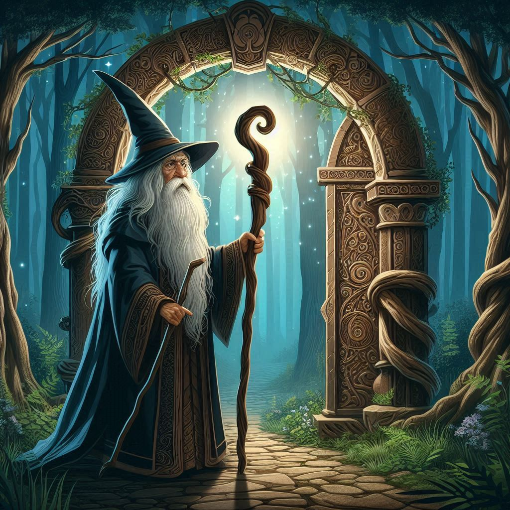

Gandalf el Gris

Como miembro de la orden de los Istari, enviado para combatir las fuerzas de la oscuridad, Gandalf ha desempeñado un papel crucial en la historia de la Tierra Media. Desde su enfrentamiento con el Balrog en las Minas de Moria, donde su transformación en Gandalf el Blanco simboliza la victoria de la esperanza sobre la desesperación, hasta su papel fundamental en la destrucción del Anillo Único, Gandalf ha dejado una huella imborrable. Su liderazgo, su capacidad para inspirar a otros y su conocimiento profundo de los peligros que acechan a la Tierra Media, adquirido a través de siglos de experiencia, lo convierten en una figura imprescindible en la lucha contra el mal.